Ce este Bambu Studio?
Bambu Studio pornește de la PrusaSlicer, dezvoltat de Prusa Research, care la rândul lui provine din Slic3r, creat de Alessandro Ranellucci împreună cu comunitatea RepRap.
Bambu Studio este programul de slicing dezvoltat de Bambu Lab, folosit pentru pregătirea fișierelor pentru printare 3D. Include fluxuri de lucru bazate pe proiecte, algoritmi de slicing optimizați și o interfață grafică simplă de folosit.
Cerințe de sistem
- Windows 10 sau mai nou
- Mac OS X 10.15 sau mai nou
- Linux Ubuntu 20.02 sau mai nou / Fedora 36 sau mai nou (versiunea pentru Linux se descarcă de la github)
- procesor Intel® Core 2 sau AMD Athlon® 64, la 2 GHz sau mai rapid
- sistem compatibil OpenGL 2.0
- 8 GB RAM recomandați, minimum 4 GB
- 2,0 GB spațiu liber pe disc sau mai mult
Descărcare și instalare
- Descarcă Bambu Studio.
- Instalează programul urmărind ghidul pas cu pas.
Asistentul de configurare
Alegerea regiunii de conectare
Primul pas este să alegi regiunea în care te afli. Un cont înregistrat, de exemplu, în America de Nord nu se poate conecta dacă regiunea este setată pe Chinese Mainland.
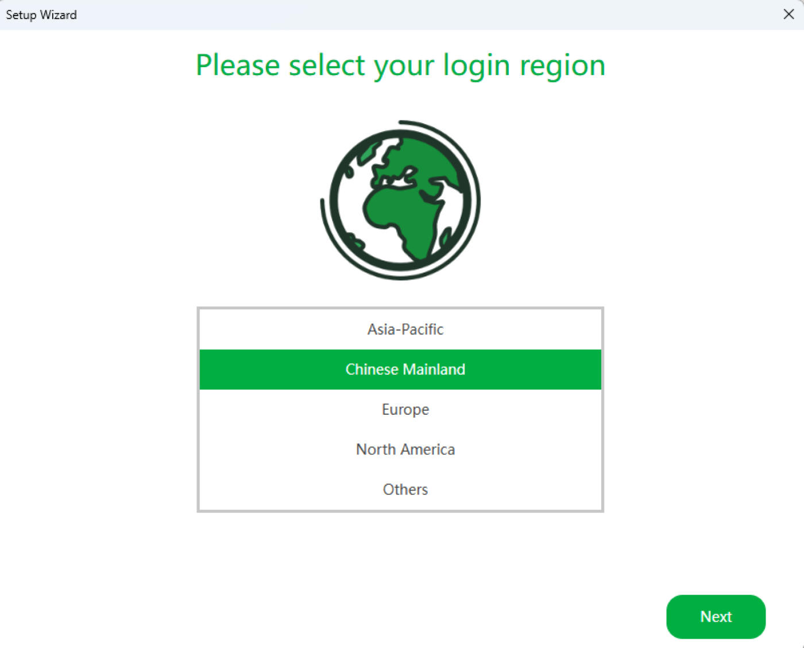
Utilizatorii din Hong Kong SAR, China; Macao SAR, China și Taiwan, China trebuie să aleagă „Asia-Pacific” ca regiune de conectare.
Selectarea printerului
Alege printerele și nozzle-urile care să apară în meniul de operare al slicerului. Poți bifa oricare dintre opțiuni sau pe toate. Opțiunile pot fi modificate mai târziu din meniul slicerului, dacă alegi acum un singur printer și vrei să schimbi dimensiunea nozzle-ului mai târziu.
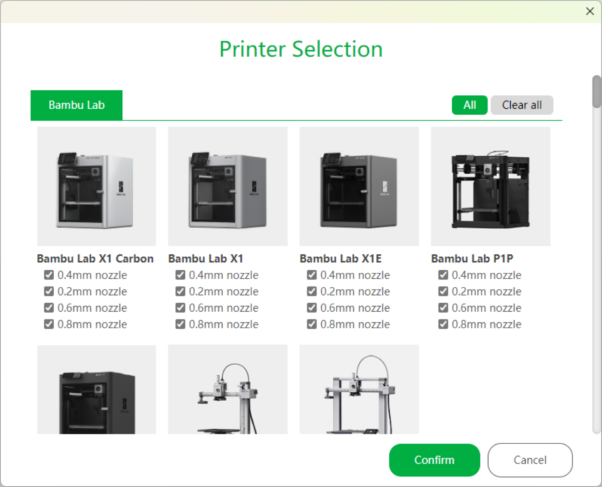
Selectarea filamentului
Alege filamentele care să apară în lista de presetări de filament. Poți selecta oricâte sunt disponibile.
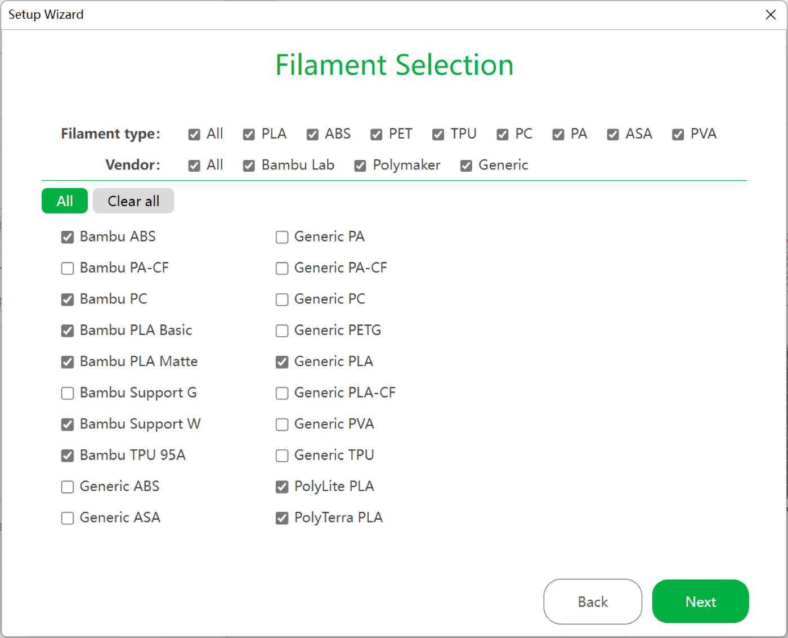
Instalarea pluginului Bambu Network
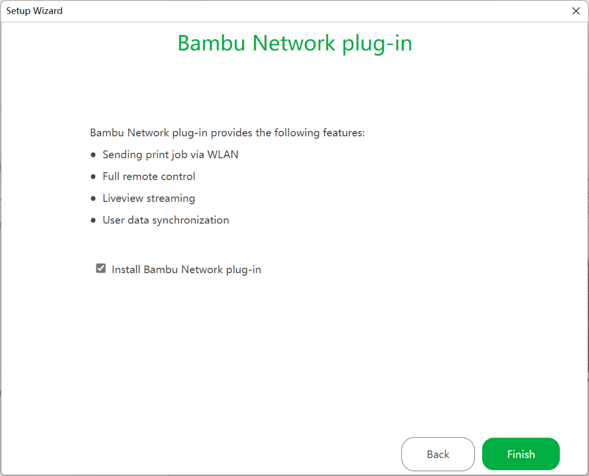
Pluginul Bambu Network oferă funcțiile de rețea: printare prin WAN/LAN, control de la distanță și sincronizarea datelor de utilizator. Instalarea necesită conexiune la internet și se face automat, dacă opțiunea este activată, după terminarea asistentului de configurare.
Primul print
Conectarea la cont (opțional, dar recomandat)
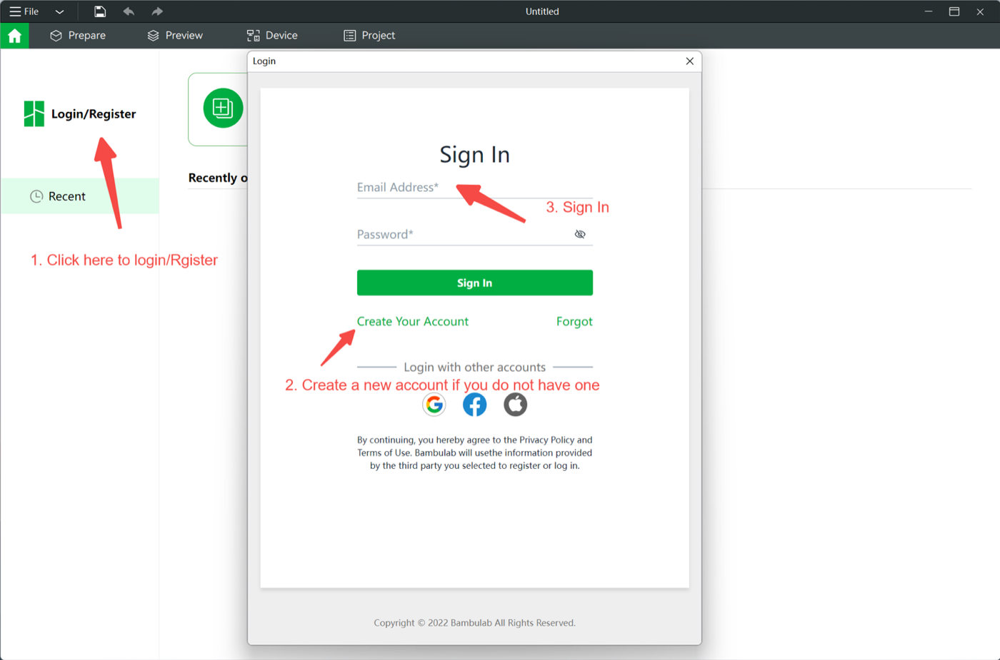
Ai nevoie de pluginul Bambu Network pentru a te conecta. Acesta este necesar pentru istoricul de printuri, din care poți retrimite la print modelele anterioare, din aplicația Bambu Handy. De asemenea, setările de utilizator se pot sincroniza în Bambu Cloud, ca să fie aceleași pe toate calculatoarele tale.
Printerul și Bambu Studio nu pot reîmprospăta automat interfața la intervale regulate. După ce schimbi numele afișat (nickname), trebuie să dezlegi și să legi din nou printerul. În Bambu Studio, deloghează-te și conectează-te din nou pentru a vedea noul nume.
Conectarea printerului la Bambu Studio
Înainte de a porni o lucrare de print, trebuie să legi printerul de Bambu Studio. Dacă ai făcut deja acest pas la configurarea inițială, poți sări peste această secțiune: este doar o reamintire. Legarea permite monitorizarea stării dispozitivului, pornirea și controlul lucrărilor de la distanță. Poți lega printerul din aplicația mobilă Bambu Handy sau din clientul desktop Bambu Studio.
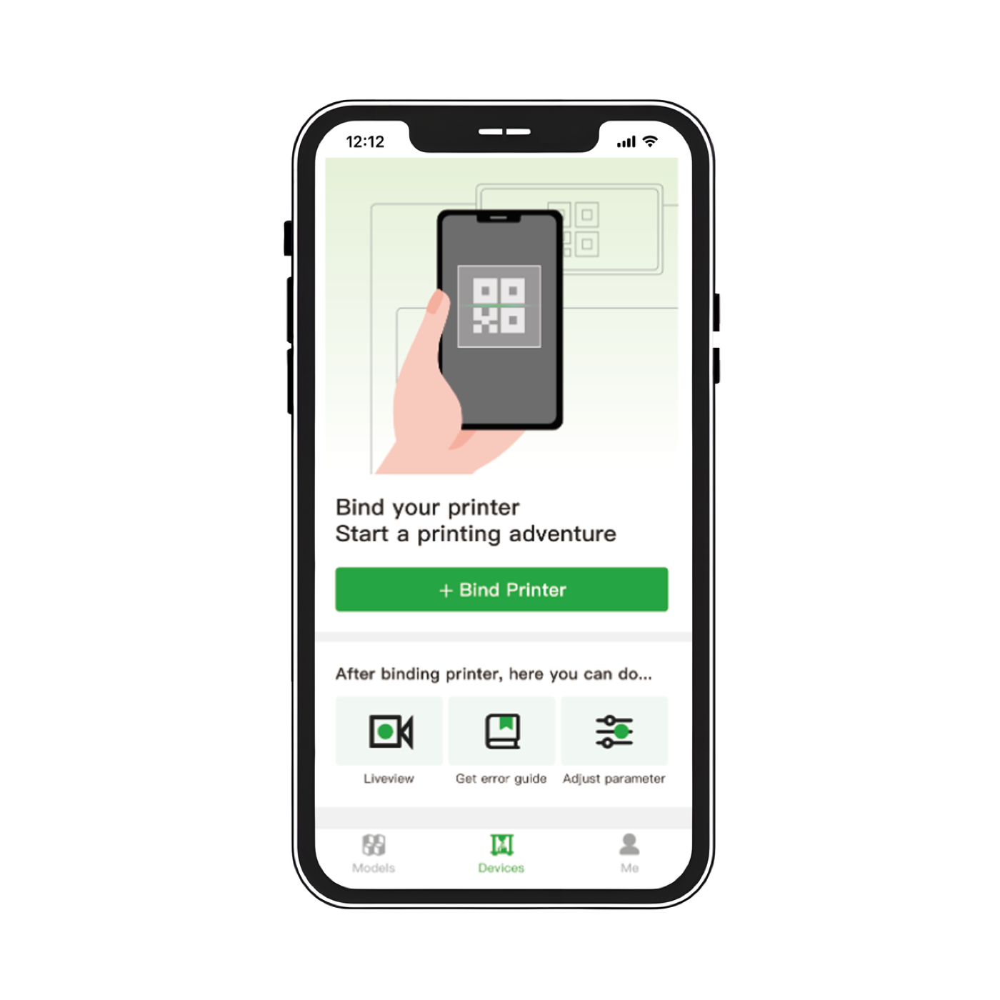
1. Bambu Handy — deschide aplicația, mergi la tabul Devices din partea de jos și apasă + Bind Printer. După ce printerul este legat, conectează-te cu același cont în Bambu Studio pentru a sincroniza lista de dispozitive.
Recomandăm Bambu Handy pentru legarea printerului, pentru că suportă toate printerele din seria Bambu. Pentru mai multe detalii, vezi în wiki ghidul Bambu Handy Quick Start Guide.
2. Bambu Studio — poți lega printerul direct din aplicația desktop. Sunt două metode disponibile:
Bind via PIN code— disponibil doar pentru seria P și seria A.Bind via IP address and access code— necesită ca printerul să fie înLAN mode; potrivit pentru rețele izolate sau medii fără acces la internet.
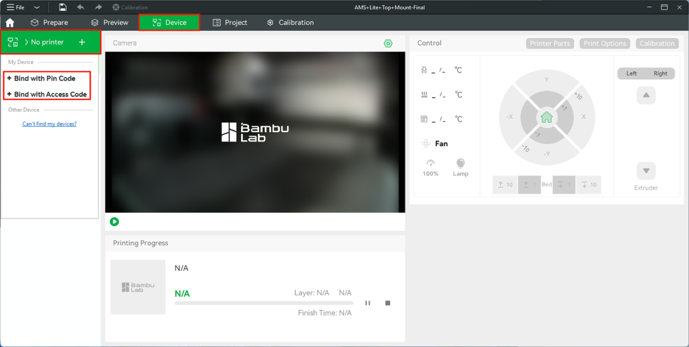
Pașii detaliați sunt descriși în wiki, în Binding a Printer in Bambu Studio Using a PIN Code și Using LAN Mode on a Bambu Lab Printer.
După legarea printerului, mergi la secțiunea Device pentru a verifica starea și a te asigura că totul este pregătit pentru print.
Crearea unui proiect nou
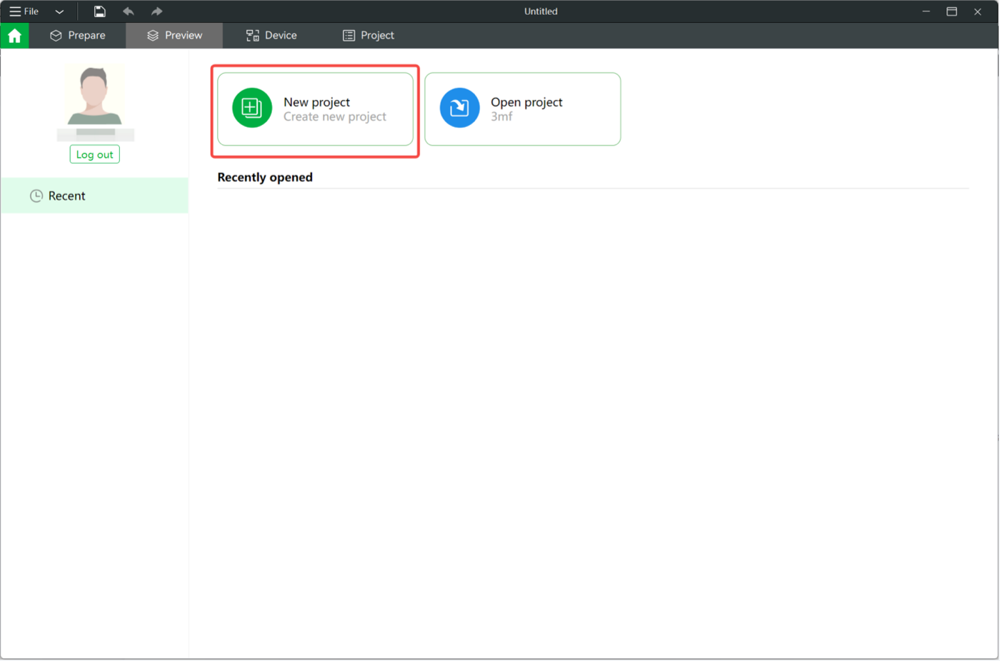
Pentru a începe, apasă New Project.
Adăugarea unui model
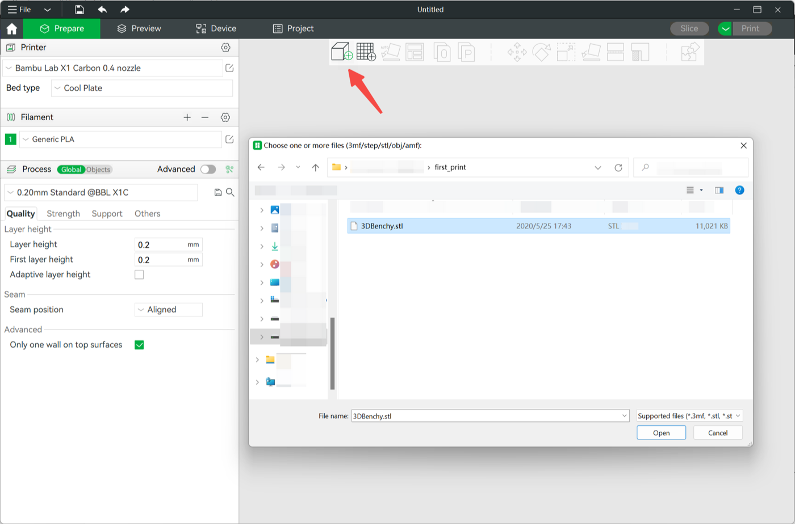
În bara de sus a panoului de previzualizare, apasă prima pictogramă, Add, pentru a importa un model. Poți trage fișierele direct din folder în Bambu Studio. Formatele acceptate: .3mf, .stl, .stp, .step, .amf, .obj.
Selectarea presetărilor de printer, filament și proces
Pentru a pregăti modelul, trebuie să alegi presetările pentru printerul pe care îl folosești, pentru filamentul cu care vei printa și pentru setările de print.
- Din lista derulantă
Printer, alege printerul folosit. Aici este inclusă și dimensiunea nozzle-ului cu care vei printa. - În secțiunea
Filament, alege tipul de filament din lista derulantă. - Din meniul derulant
Process, alege înălțimea layerului. Reține că un layer mai mic înseamnă un print mai lung. Pentru majoritatea printurilor,0.20mmeste valoarea standard.
Slice pe placă
- După ce ai terminat setările, apasă butonul
Slice, în dreapta sus în Bambu Studio. - Dacă fișierul conține mai multe plăci, apasă
Slice All, în colțul din dreapta sus al ecranului.
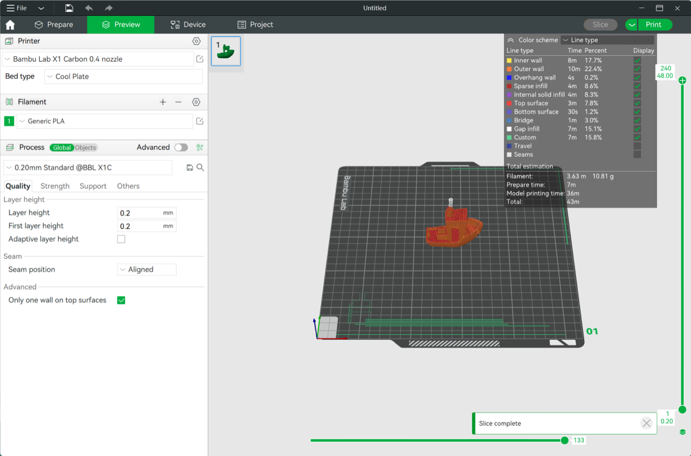
După slice, programul te duce în panoul Preview, unde vezi cum arată modelul după procesarea fișierului .3mf. Histograma din partea dreaptă arată timpii de print pentru fiecare parametru al printului.
Trimiterea lucrării de print
Sunt cinci variante: print direct, print pe toate plăcile, trimitere pe cardul SD, export pe cardul SD și trimitere către mai multe dispozitive.
Printare placă
Apasă Print, în colțul din dreapta sus. Se deschide o fereastră cu o previzualizare rapidă a modelului. Alege printerul din lista derulantă și bifează dacă vrei ca printerul să execute anumite operații înainte de print, cum ar fi Bed Leveling sau flow calibration. La final, apasă Send pentru a trimite fișierul la printer și a porni printul.
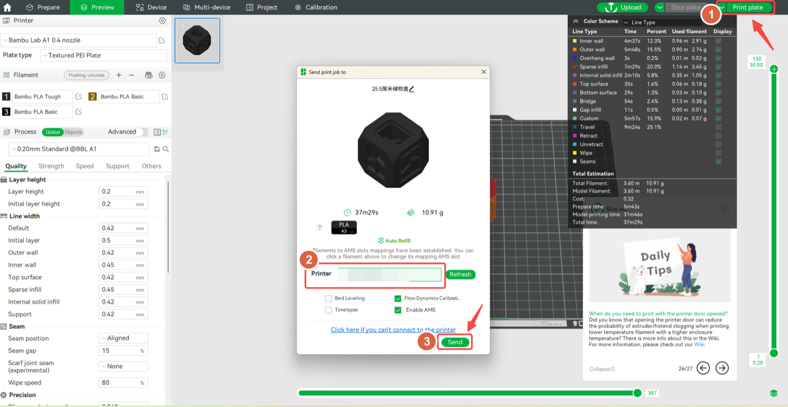
Printare toate plăcile
Pentru mai multe informații, vezi Bambu Studio Multi Plate Printing Guide.
Pentru a trimite fișiere prin WLAN, pluginul Bambu Network trebuie să fie instalat, iar Bambu Studio și printerul trebuie să fie în aceeași rețea LAN.
Trimitere pe card SD
- Apasă săgeata din stânga butonului
Print plate, în colțul din dreapta sus, și alegeSend.
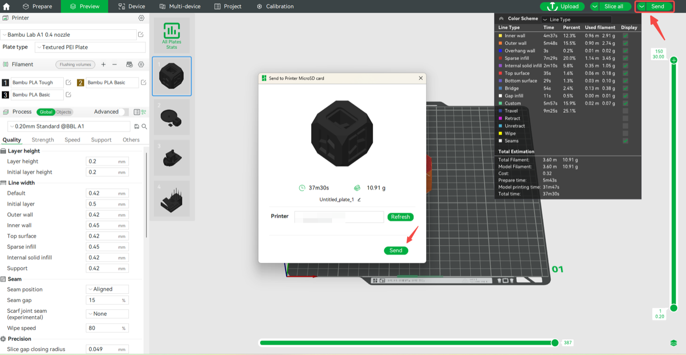
- Dacă fișierul conține mai multe plăci, apasă aceeași săgeată și alege
Send all. Se deschide fereastraSend to Printer MicroSD card. Alege printerul, iar fișierul este trimis pe cardul SD al printerului.
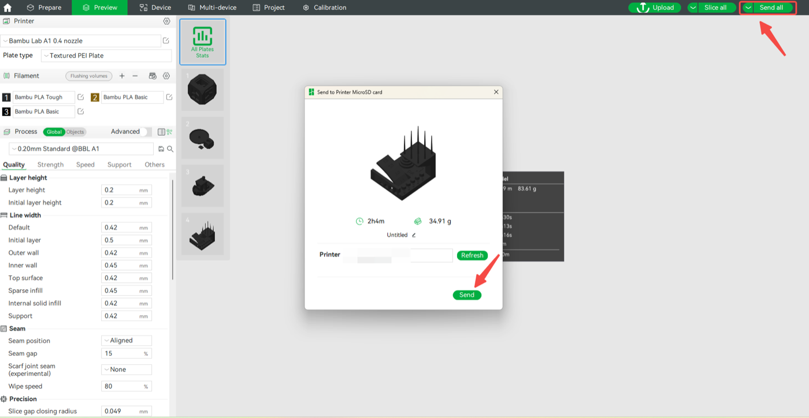
Bambu Studio și printerul trebuie să fie în aceeași rețea LAN.
Export fișier pregătit pentru print
- Scoate cardul SD din printer și introdu-l în calculator. Apasă săgeata din stânga butonului
Print plate, în colțul din dreapta sus, și alegeExport plate sliced file. Confirmă apoi selecția.
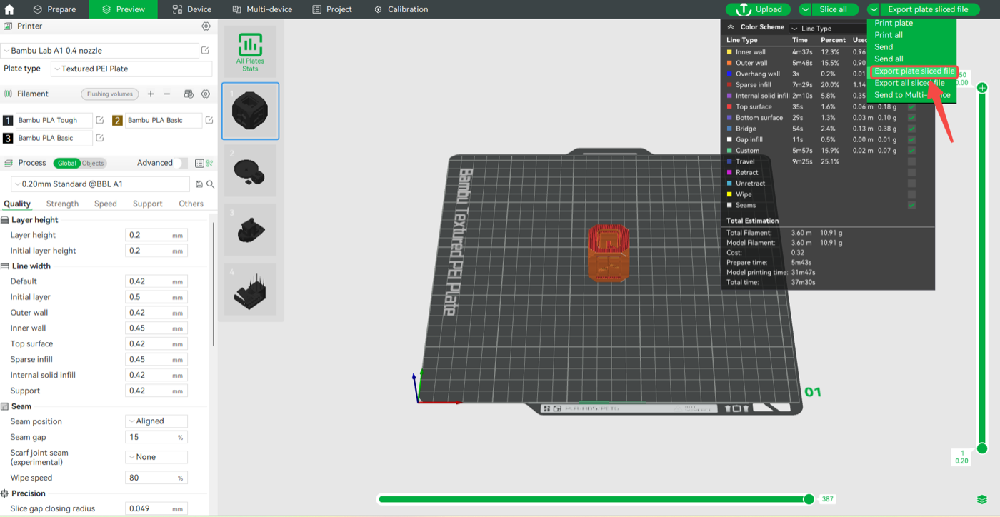
- Dacă fișierul conține mai multe plăci, apasă aceeași săgeată și alege
Export all sliced file.
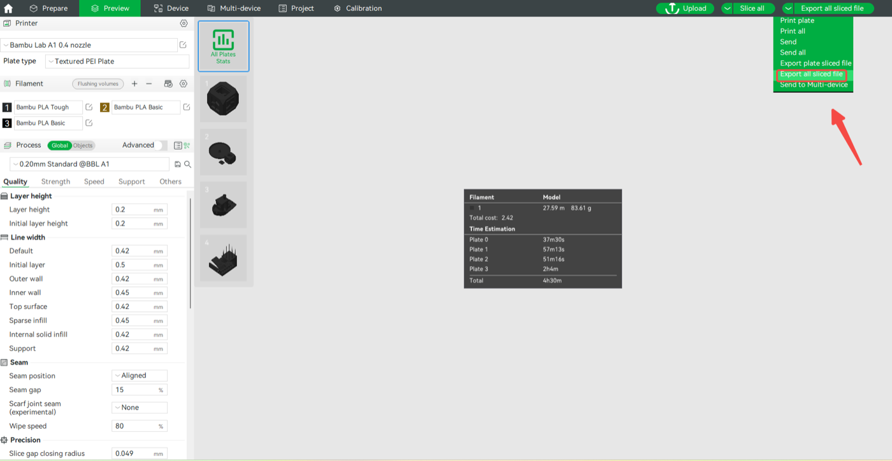
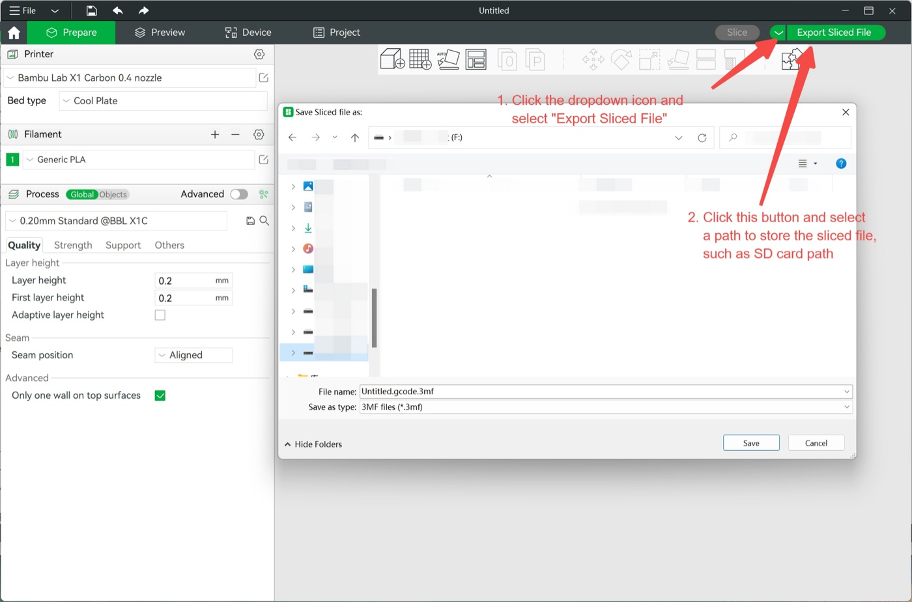
Se deschide o fereastră de explorare a fișierelor, unde alegi locația cardului SD. Apasă Save, iar fișierul este exportat pe card.
După salvare, scoate cardul și introdu-l în slotul din partea dreaptă a ecranului printerului. Apasă pictograma Home din meniul din stânga, apoi Print Files și alege opțiunea SD Card din meniul de sus. Apasă pe fișierul pe care tocmai l-ai exportat pentru a începe printul.
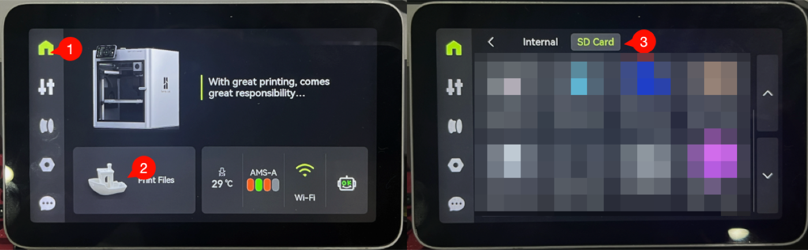
Ghiduri detaliate pentru printarea de pe cardul SD, pe modele: How to print from Micro SD Card on Bambu Lab X1, How to print from SD card using Bambu Lab P1 Series 3D printer și How to print from SD card using Bambu Lab A1 Series 3D printer.
Trimitere către mai multe dispozitive
Pentru mai multe informații, vezi Multi-device management.
Control de la distanță
Secțiunea Device din Bambu Studio permite controlul și monitorizarea printului în timp real (vezi în wiki remote-control). Dacă printerul are cameră (standard pe X1C), poți urmări printul în direct, de la distanță.
Pentru a accesa printerul astfel, pluginul Bambu Network trebuie să fie instalat.
Observații finale
Dacă ai nelămuriri sau întrebări despre pașii descriși aici, trimite un tichet tehnic. Atașează o poză sau un video care arată problema, împreună cu orice altă informație relevantă pentru sesizarea ta.